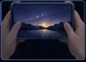
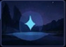

Ative o modo
Night Vision
Toque no ícone de Lua para ativar o modo noturno.
Aprenda como usar o modo Night
Vision para fotos mais claras e nítidas
Toque no ícone de Lua para ativar o modo noturno.

Segure o aparelho com firmeza por alguns segundos.

Luzes muito fortes podem prejudicar o resultado da foto.